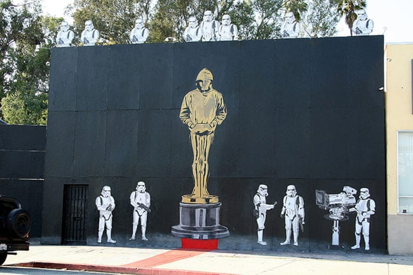

Credit
Banksy enjoys putting people and objects in unexpected scenarios and here the usually menacing stormtroopers appear somewhat comical in their setting as camera man an presenters. It seems fitting that this piece was part of a larger mural found in Hollywood – home of the movies! There is still some debate over whether or not this is in fact a Banksy or the work of another artists going by ‘Mr Brainwash’.
2009-07
Spray Paint
Los Angeles, USA